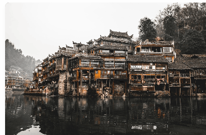
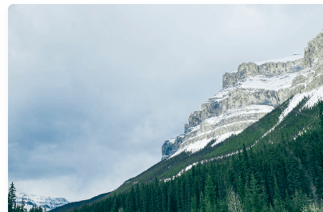

Few things get the world's travel press excited like … the opening
of a smart, new hotel in an exotic paradise where previously there
were none.
TRAVEL GUIDES
Five reasons to visit Oman
We think that the Middle Eastern country of Oman … has something to
offer everyone
TRIP REVIEWS
A Desert Oasis in Jordan
Arriving after a long, satisfying walk through part of … the iconic
Jordan

Gujarat is vastly underrated and it's a mystery to us why the region
isn't more well-known as a tourist destination. It has a plethora of
temples and palaces, some of the world's best textiles, and the
surreal landscapes and wildlife. of the Rann of Kutch
Mostar's iconic Stari Most Bridge is one of the country's most
photographed locations, but the view from the bridge down the
Neretva River, which is often a brilliant green in hue, is also well
worth getting the camera out for.

Follow in the footsteps of Japanese Emperors on the Kumano Kodo (or
Emperor's Trail), an ancient route through Japan's mist shrouded
mountains and wooded valleys where isolated shrines dot the
countryside.
 EXPLORD
EXPLORD.png)